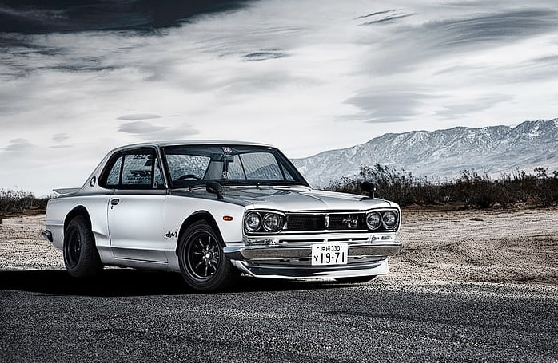
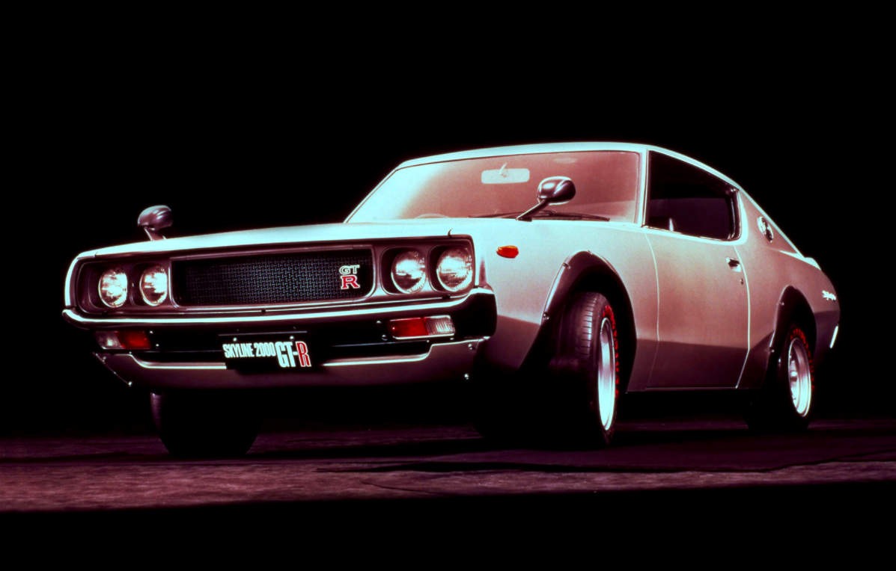
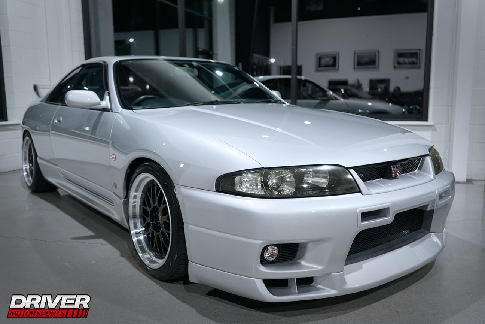
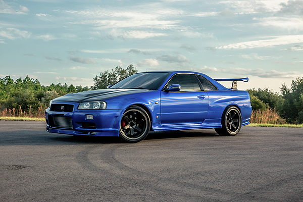
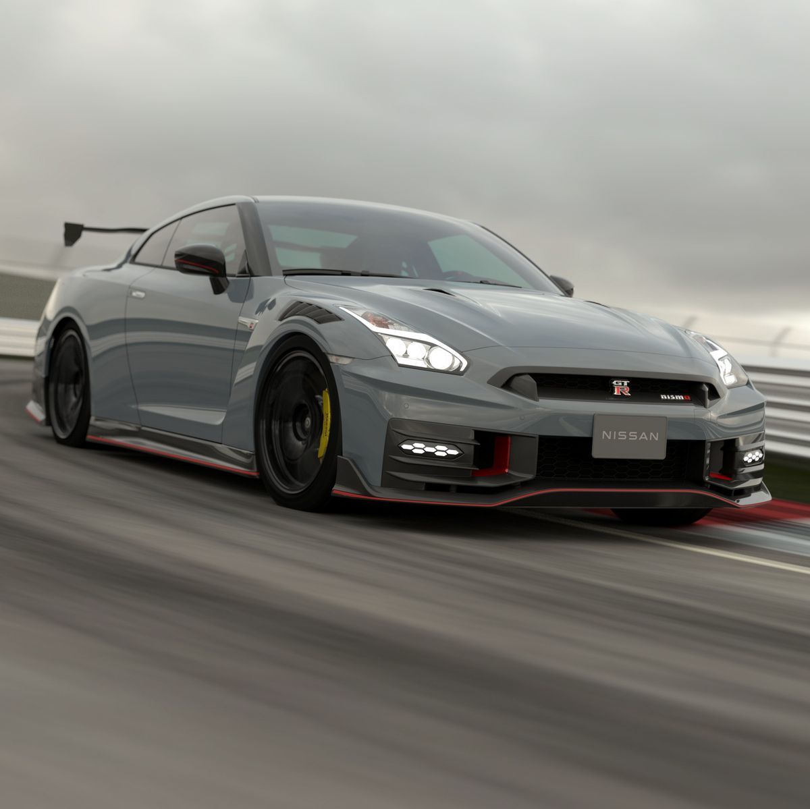

Specs
|  | Make: | Nissan |
| Model: | Skyline GT-R Hakosuka | |
| Year: | 1969-1972 | |
| Engine: | 3.8L Twin-Turbo V6 | |
| Horsepower: | 160 hp @ 7000 rpm | |
| Torque: | 131 lb-ft @ 5600 rpm | |
| Transmission: | 5-speed manual | |
| Drive Type: | Rear-Wheel drive | |
| 0-60 mph: | 8.0 seconds | |
| Top Speed: | 125 mph |
|  | Make: | Nissan |
| Model: | Skyline GT-R (KPGC110) | |
| Year: | 1971-1973 | |
| Engine: | 2.0-liter straight-six, DOHC w/ 24 valves | |
| Horsepower: | 160 hp @ 7000 rpm | |
| Torque: | 130 lb-ft @ 5600 rpm | |
| Transmission: | 5-speed manual gearbox | |
| Drive Type: | All-Wheel drive | |
| 0-60 mph: | 8.0 seconds | |
| Top Speed: | 125 mph |
 |
Make: | Nissan |
| Model: | Skyline GT-R R32 | |
| Year: | 1989-1994 | |
| Engine: | 2.6-liter twin turocharged inline-6 | |
| Horsepower: | 280 hp @ 6,800 rpm | |
| Torque: | 260 lb-ft @ 4,400rpm | |
| Transmission: | 5-speed manual | |
| Drive Type: | All-wheel drive | |
| 0-60 mph: | 4.7 seconds | |
| Top Speed: | 155 mph |
|  | Make: | Nissan |
| Model: | Skyline GT-R R33 | |
| Year: | 1989-1994 | |
| Engine: | (2.0-2.6)liter inline-sex turbocharged inline-6 | |
| Horsepower: | up to 280 hp @ 6,800 rpm | |
| Torque: | 267 lb-ft @ 4,400rpm | |
| Transmission: | 5-speed manual or 4-speed automatic | |
| Drive Type: | All-wheel drive | |
| 0-60 mph: | (4.8-7.4) seconds | |
| Top Speed: | 180-250 km/h |
|  | Make: | Nissan |
| Model: | Skyline GT-R R34 | |
| Year: | 1998-2002 | |
| Engine: | (2.0-2.6)liter inline-6 | |
| Horsepower: | up to 280 horsepower | |
| Torque: | up to 289 lb-ft | |
| Transmission: | 5-speed manual or 4-speed automatic | |
| Drive Type: | All-wheel drive | |
| 0-60 mph: | (4.9-5.4) seconds | |
| Top Speed: | 155 mph |
|  | Make: | Nissan |
| Model: | Skyline GT-R R35 | |
| Year: | 2007 | |
| Engine: | 3.8-liter twin-turbocharged V6 | |
| Horsepower: | 570-600 horsepower | |
| Torque: | 470-481 lb-ft | |
| Transmission: | 6-speed dual-clutch automatic transmission | |
| Drive Type: | All-wheel drive | |
| 0-60 mph: | 2.7-3.2 seconds | |
| Top Speed: | (195.7-206.9) mph |